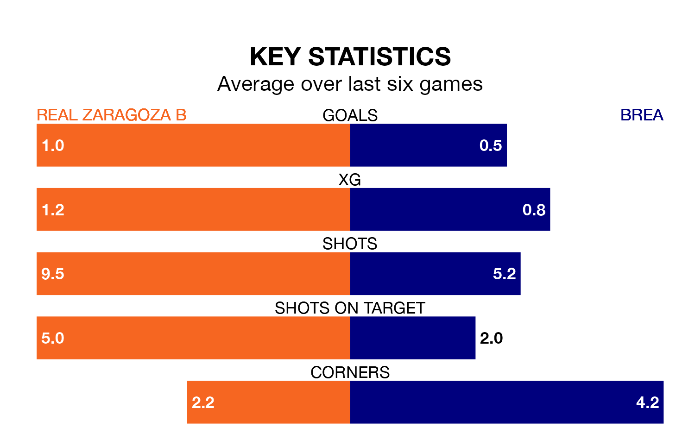

Struggling Brea face Real Zaragoza B away at Ciudad Deportiva del Real Zaragoza on Sunday looking to build on a win in their last league outing.
After securing all three points with a 1-0 victory over Deportivo Alaves B on February 4, Brea sit 16th in the Segunda División RFEF Group 2.
They travel to play a Zaragoza B side sixth in the standings, who also won their last match, 1-0 against Gernika Club.
With 11 goals in 21 games so far this season, Brea are the league's joint-second-lowest scorers with 0.5 goals per game. And they are conceding more than average, letting in 30 goals at a rate of 1.4 per game.
Zaragoza B, meanwhile, are above average scorers, with 1.2 goals per game, compared to a league average of 1.1. They have conceded 0.7 goals per game.
The hosts are in mixed form in the Segunda División RFEF Group 2, with two wins and three draws from their last six games.
With a win and two draws over that period, the away team's form is worse – they have taken five points from 18, compared to Zaragoza B's nine.
Updated: 11:43 (UTC), 08/02/24